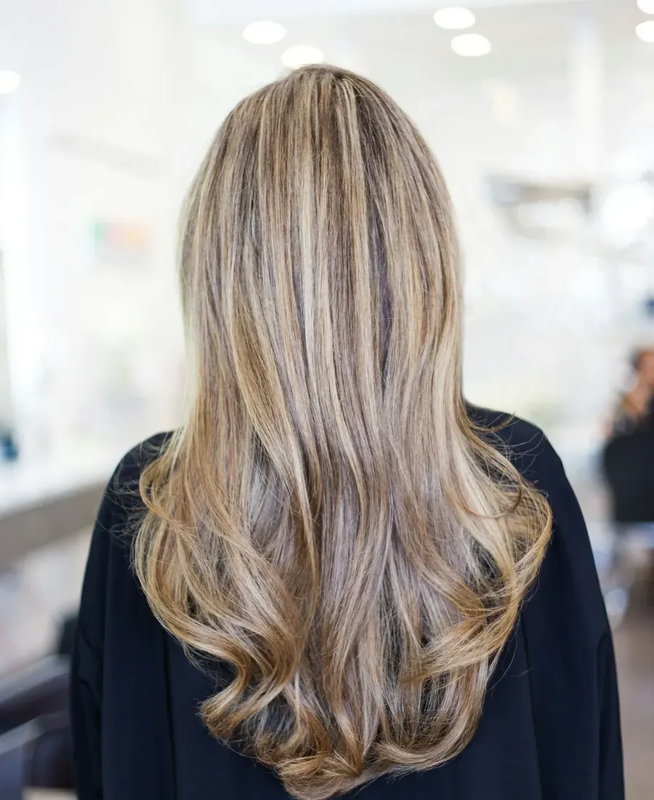
DamesVan een frisse snit tot een kleur die je blij maakt.
- Knippen en brushen
- Kleuren en lokken
- Balayage
- Krullen en golven
Bij Siska in Heist-op-den-Berg kom je voor een snit, een nieuwe kleur of de eerste knipbeurt van je zoon. Ze stelt de juiste vragen, geeft eerlijk advies en houdt de prijs schappelijk.
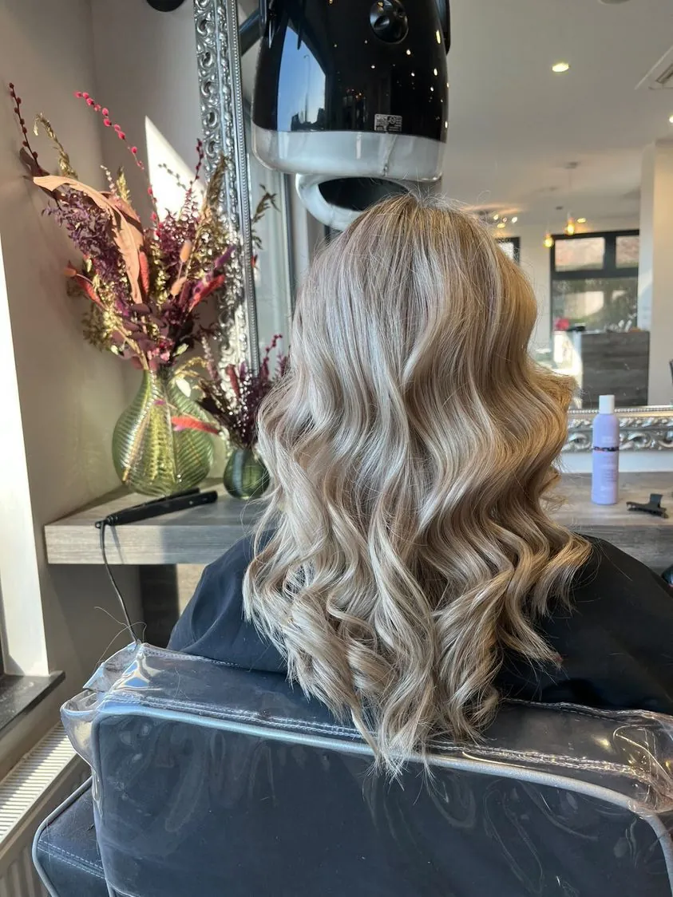
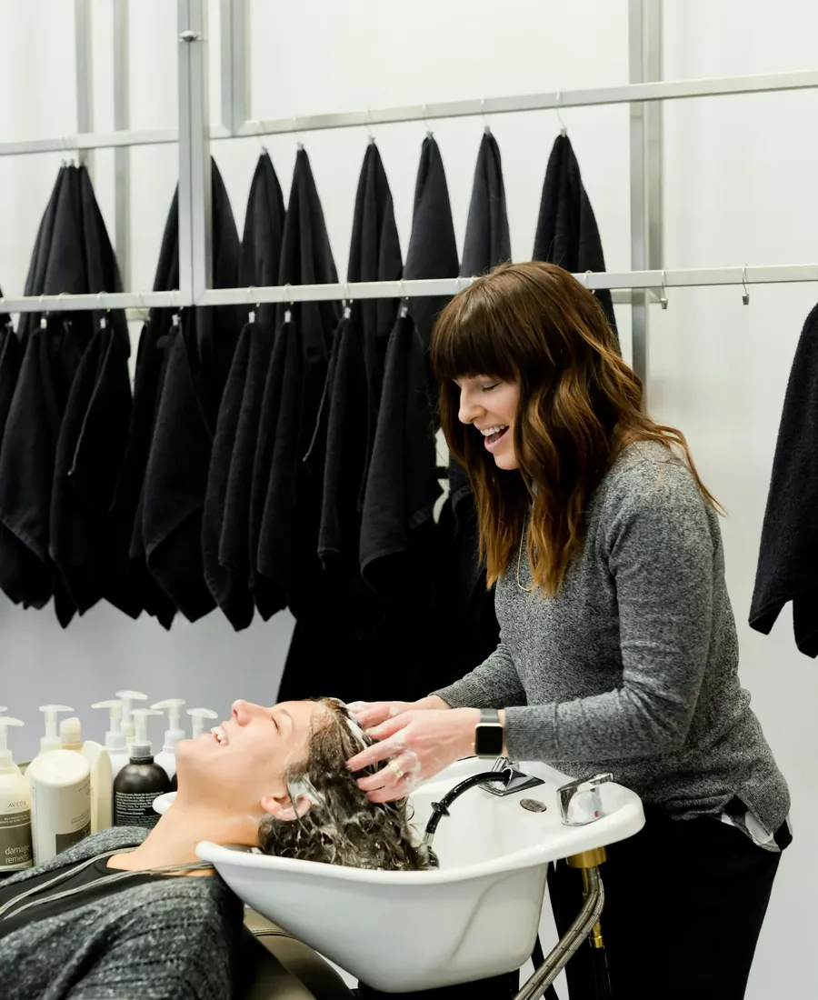
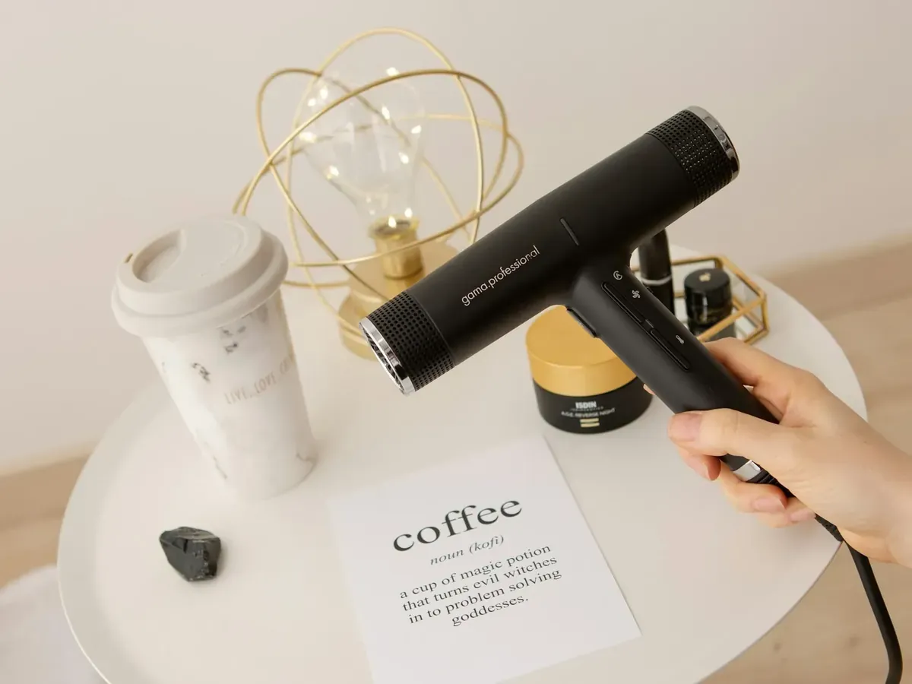
“U wordt super vriendelijk ontvangen met een tasje koffie.”Veel gezinnen komen hier al jaren samen. Ieder met zijn eigen wensen, en allemaal met hetzelfde gevoel: hier zijn we welkom.

DamesVan een frisse snit tot een kleur die je blij maakt.
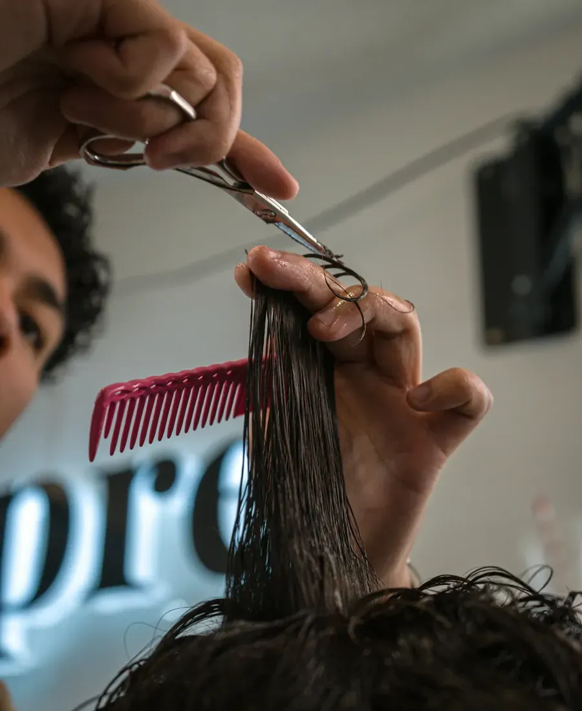
HerenVlot, verzorgd en zoals je het gewoon bent.
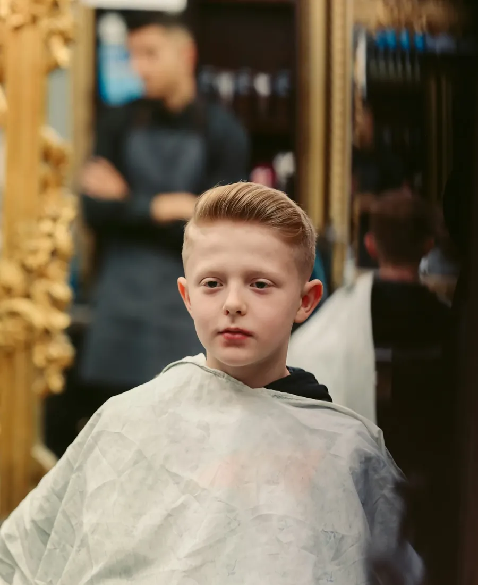
KinderenRustig en met geduld, ook voor wie het spannend vindt.
Warm blond, zachte lokken of je eigen kleur wat opfrissen. Siska kijkt naar je huidskleur en hoe je je haar draagt, en zegt eerlijk wat bij je past.
“Mijn haarkleur is nog nooit zo mooi geweest, en dat voor een redelijke prijs. Ik ben fan en heb mijn vaste kapster gevonden.”
Mel Tuscani, op Google
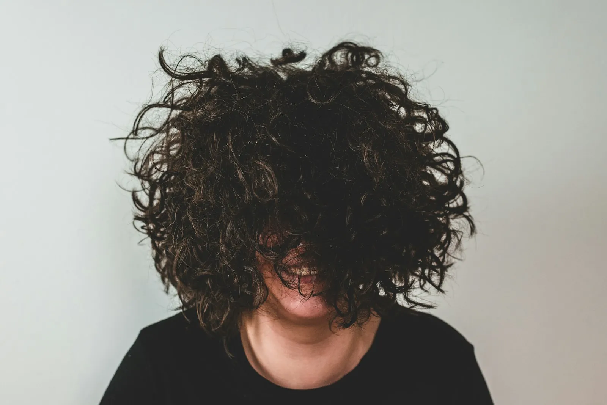
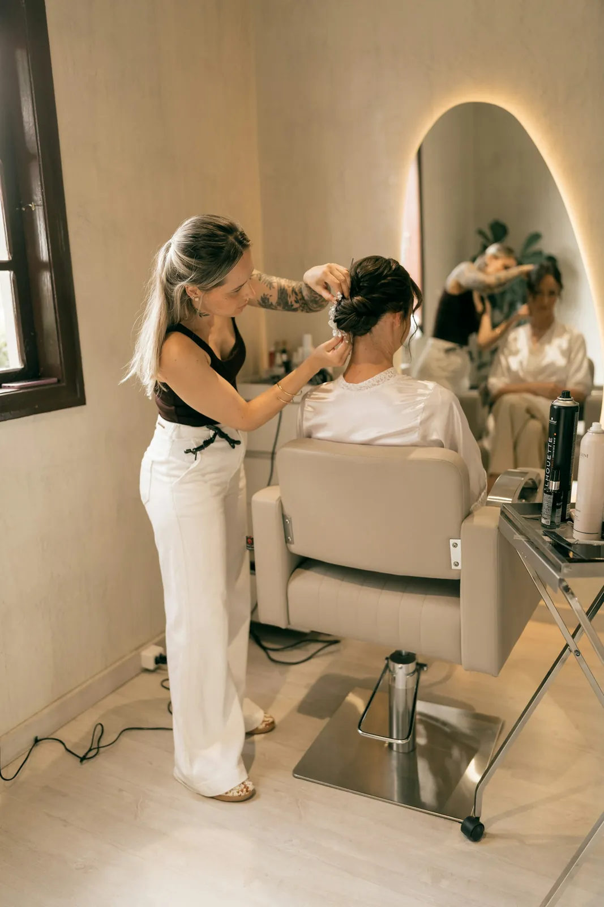
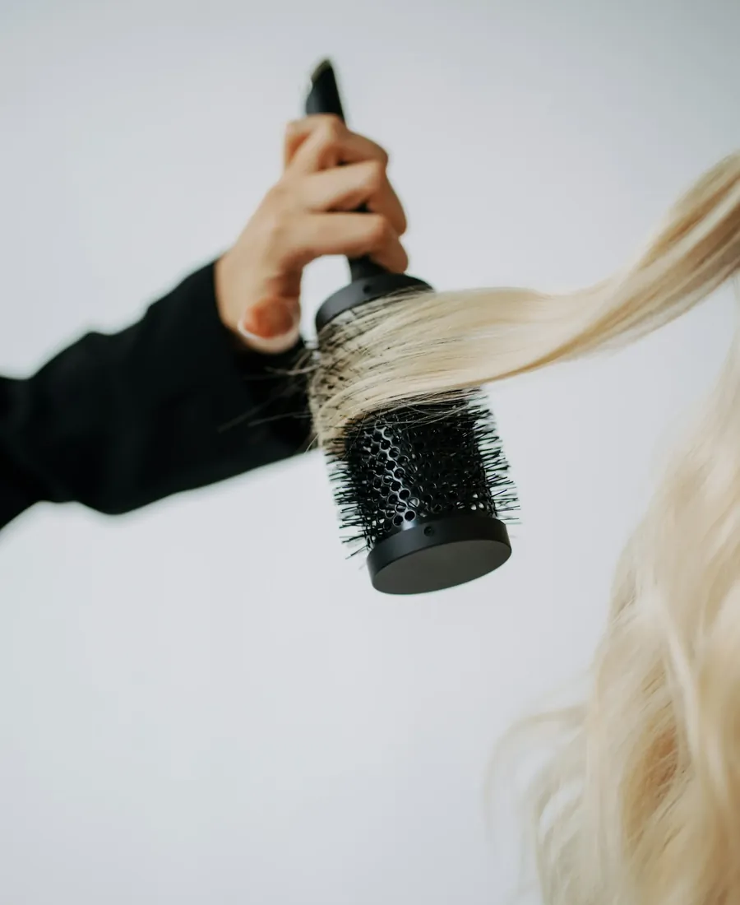
Wat nieuwe klanten opvalt: je wordt ontvangen alsof je al jaren komt.
Je neemt plaats en krijgt een tasje koffie. Geen haast.
Siska stelt de juiste vragen: wat wil je, wat stoort je, hoeveel tijd steek je er thuis in?
Past het niet bij je haar, dan hoor je dat. Ze denkt mee tot het goed zit.
Met een kapsel dat je thuis zelf ook in model krijgt.
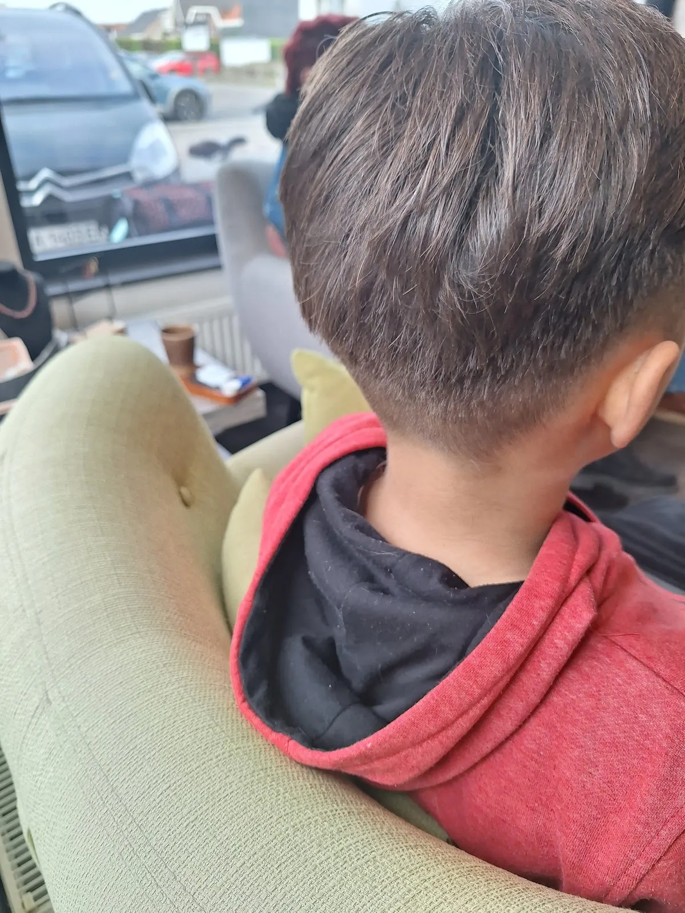
Ouders proberen vaak een paar salons voor ze de juiste vinden voor hun kinderen. Hier blijven ze.
“Vandaag eerste keer bij Siska langsgeweest. Erg tevreden, heel aangename ontvangst, stelt de juiste vragen, eerlijk advies en je voelt je ook heel erg welkom. Siska weet heel goed wat ze doet.”
Ellen Franckenop Google“Na vele kapsalons geprobeerd te hebben voor onze zoon uiteindelijk bij Siska terechtgekomen. Nog nooit is zijn haar zo mooi geknipt geweest. En nog eens vriendelijk en schappelijk van prijs ook.”
Steefop Google“Een heel mooi, proper kapsalon. Siska is supervriendelijk en zeer bekwaam. Ze wist onmiddellijk wat ik wou.”
Ann Van Eupenop Google“U wordt super vriendelijk ontvangen met een tasje koffie. Ik heb mijn vaste kapster gevonden.”
Mel Tuscaniop Google“Altijd zeer vlot en vriendelijk verder geholpen. We komen er al jaren met het hele gezin.”
Marco Leysenop Google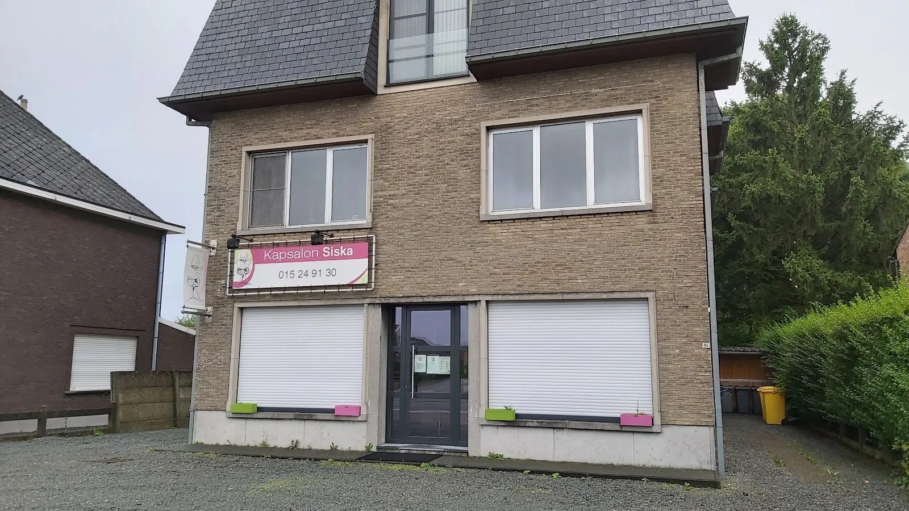
2220 Heist-op-den-Berg
| Maandag | Gesloten |
| Dinsdag | 08:00 - 18:00 |
| Woensdag | 08:00 - 18:00 |
| Donderdag | 08:00 - 21:00 |
| Vrijdag | 08:00 - 17:00 |
| Zaterdag | 07:00 - 16:00 |
| Zondag | Gesloten |
Op donderdag kan je na het werk nog langskomen, op zaterdag al vroeg.
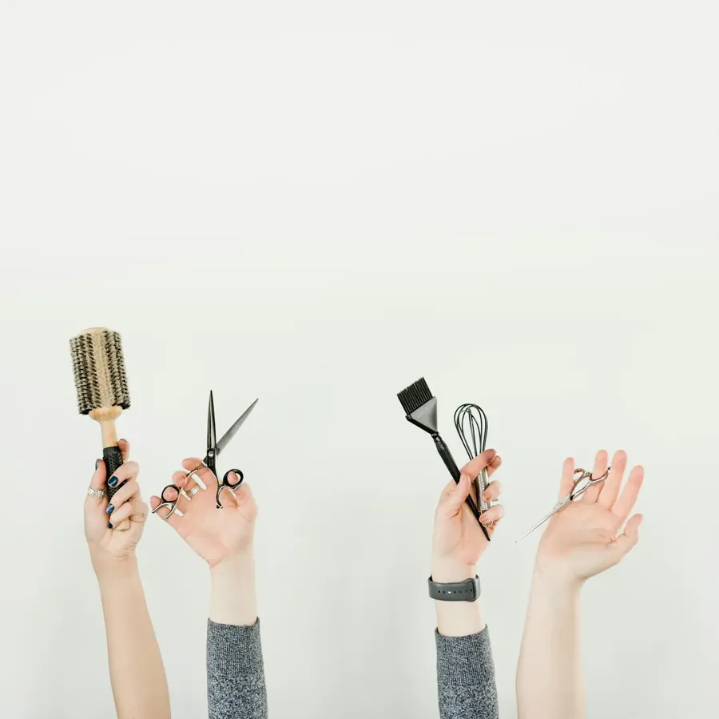
Ja. Zeg bij je aanvraag wie er meekomt, dan worden jullie na elkaar ingepland.
Op donderdag kan je terecht tot 21 uur. Op zaterdag zijn we al vanaf 7 uur open.
Zeker. Ook voor een eerste knipbeurt ben je welkom, met de tijd die erbij hoort.
Bel naar 015 24 91 30, stuur een bericht via Facebook of vul het formulier op deze pagina in.
DIEen woordje uitleg van Stijn
Ik maakte deze demo voor jullie om te tonen wat er kan. Na een kort gesprek maak ik er iets veel persoonlijkers van, helemaal naar jullie wens.
Vrijblijvend. Ik kom langs of we bellen.
Op maat, op jullie eigen domein.
Geen voorschot. Jullie betalen pas als alles klaar is.
Hosting, domeinnaam en kleine wijzigingen, zoals nieuwe openingsuren.
Omdat een voorbeeld meer zegt dan een mail. Zo zien jullie meteen wat er kan, en het kost jullie niets.
Nee. Het gesprek is vrijblijvend. Vinden jullie het niks, dan is het daarmee gedaan.
Na ons gesprek staat jullie site binnen 10 tot 14 dagen online.
Zeker. Jullie domeinnaam kan gewoon blijven, de nieuwe site komt in de plaats van de oude.
Nee, dat doe ik op basis van ons gesprek. Eigen foto's zijn mooi meegenomen, maar niet nodig om te starten.